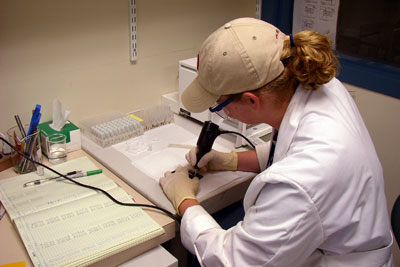

Scholars and Researchers Visiting the Archaeometry Laboratory

Occasionally, the Archaeometry Laboratory hosts scholars and visiting researchers. Visitors may come to provide lectures, to discuss collaborative research, to use analytical instruments, or for hands-on experience analyzing compositional data.
2012
M. Steven Shackley - Geoarchaeological X-Ray Fluorescence Laboratory, University of California-Berkeley and University of New Mexico
Ruth Fauman-Fichman – Department of Anthropology, University of Pittsburgh
Enrique Rodriguez – Department of Anthropology, University of Texas at Austin
Lauren Zych – Department of Anthropology, University of Chicago
Royal Ghazal – Department of Anthropology, University of Chicago
Matthew Spigelman – Department of Anthropology, New York University
Donna Glowacki – Department of Anthropology, Notre Dame University
Hector Neff – Department of Anthropology, California State University, Long Beach
Masami Izuho - Faculty of Social Sciences and Humanities, Tokyo Metropolitan University
Mechael Osband – Land of Israel Studies and Archaeology, Bar-Ilan University
2011
Akira Ono – Professor of Archaeology and Director of the Center for Obsidian and
Lithic Studies, Meiji University
Laure Dussubieux – Director of the Analytical Laboratory, Chicago Field Museum
Danielle Kurin – graduate student at the Department of Anthropology, Vanderbilt University
Jian Zhu – Research Scientist at the Graduate University of Chinese Academy of Sciences
Changsui Wang – Director of the Joint Laboratory of Human Evolution and Archaeometry of the Chinese Academy of Sciences and Max Planck Institute.
Yaowu Hu – Director of the Department of Scientific History and Archaeometry, Graduate University of Chinese Academy of Sciences
Garman Harbottle – Department of Chemistry, Brookhaven National Laboratory
Deb Huntley – Archaeology Southwest
Mark Hauser – Department of Anthropology, Northwestern University
Gregory D. Lattanzi – Department of Anthropology, Temple University
Scott Van Kueren – Department of Anthropology, University of Vermont
Michal Artzy – Department of Archaeology, University of Haifa
Carolyn Dillian – Center for Archaeology and Anthropology, Coastal Carolina University
Margaret Beck – Department of Archaeology, University of Iowa
2009
Leee A. M. Neri – Henry Luce Foundation Scholar, Archaeological Studies, University of the Philippines
2008
Guillermo de la Fuente – Department of Anthropology, University of Catamarca
2005
Yaroslav V. Kuzmin – Fulbright scholar, Russian Academy of Sciences